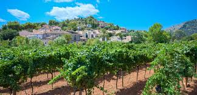
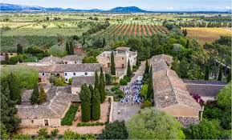
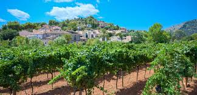
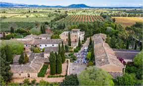
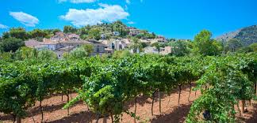
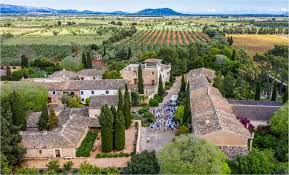

Galeria
 



Varietat vitinicola de la Serra de Llevant de Mallorca
La densitat de plantació pot oscil • lar en funció dels terrenys, varietats i sistemes de formació, entre 2.500 i 5.000 ceps per hectàrea. La formació i conducció dels ceps s’efectua en forma de vas o d’espatllera. El clima de la zona és típicament mediterrani, caracteritzat per temperatures suaus a l’hivern i molt calorós a l’estiu. La precipitació mitjana anual és de 450 mm. Els períodes de pluja es concentren principalment a la tardor i primavera. Les vinyes de la zona del Pla i Llevant estan situades a menys de 100 metres d’altura, practicament a nivell de la mar. Per ells, les brises marines influeixen de manera molt important en aspectes microclimàtics. El règim d’ “Embat” s’estableix diàriament com a conseqüència de la variació de la temperatura. El vent bufa de mar a terra durant les hores de màxima insolació i la seva direcció s’inverteix, amb menor intensitat, durant la nit. A la zona de Pla i Llevant, en l’època càlida de l’any, es desenvolupa un règim d’ “embats” d’origen marítim convergents, la qual cosa afavoreix una moderació de les temperatures i determina la formació de la nuvolositat i, de vegades, precipitacions.
Les varietats autòctones premsal i giro ros donen lloc a vins que expressen de manera singular el caràcter de la terra de la zona. Són vins més aviat pàl•lids amb lleugers matisos verdosos. Aromes intensos, a fruita blanca, amb fons d’herbes mediterrànies; boca saborosa. Frescos. Acidesa agradable. Les peculiaritats de les varietats foranes plantades a les nostres terres ens ofereixen un ampli ventall de sensacions: Chardonnay i Muscat, donen vins altament expressius en nas i favorables a la boca. Frescos. Viva acidesa. Lleugers i llargs al mateix temps. Amb fons marcats per la seva varietat (almesc, flors, fruites).
La nitidesa sensorial que desprenen les nostres varietats patenten els nostres vins rosats. Vins de color ‘frambuesa’ intens. Aromes de fruita vermella, afinat fons de terra, boca saborosa, notes cítriques, bona acidesa. Els rosats elaborats amb l’autòctona Callet donen aromes cítrics, concretament de taronja típics de la varietat.
L’estil que caracteritza l’adaptació mediterrània de les varietats franceses que elaborem a la nostra zona, donen lloc a vins que desprenen agradables tocs balsàmics en nas; en boca ofereixen tanins suaus i madurs; són saborosos i amb cos. Respecte el raïm autòcton, els vins resultants es caracteritzen per un nas únic. Tocs de terra units amb un interessant caràcter varietal, donen lloc a vins rodons i d’interessant buoquet, després d’una lleugera estada a la bóta. En els últims anys s’han elaborat vins amb caràcter més jove, frescs, vius i amb aromes predominantment fruiters.
Els vins escumosos agafen força a la comarca de la DOP Pla i Llevant Mallorca. Cada any són més els cellers que decideixen crear un perfil nou dins dels vins de l’entitat. Trobem escumosos blancs i rosats, elaborats tant amb varietat autòctona com foranea. Són vins lleugers, amb una bombolla fina i persistent. Predominants aromes fruiters i típics de l’elaboració com són brioixeria, llevat i pa.

